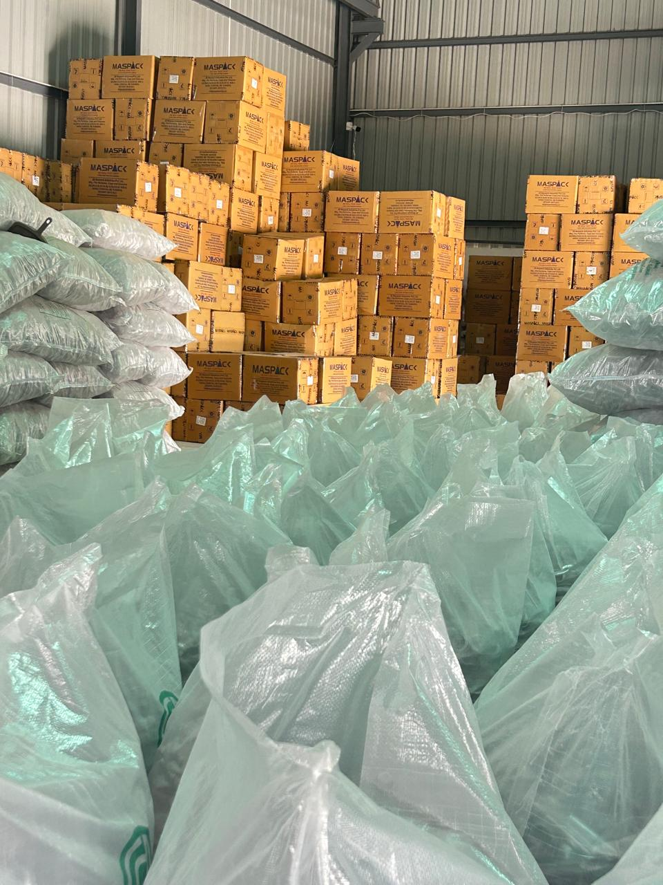

About Ciplon Plasto
Delivering excellence in PET preform manufacturing for over a decade
Who We Are
Ciplon Plasto is a precision-driven PET preform manufacturer based in Palanpur, Gujarat. With over 10 years of experience, we have established ourselves as a trusted partner for businesses across the beverage, water, edible oil, dairy, and consumer packaging sectors.
Our commitment to quality, innovation, and customer satisfaction sets us apart in the industry. We combine modern manufacturing technology with strict quality control to deliver preforms that meet global benchmarks.

Where precision becomes dependable packaging.
From material selection to dispatch, our work is built around repeatable processes and careful attention to detail. This short plant video offers a closer look at the products, people, and production environment behind every Ciplon Plasto preform.
We believe a strong manufacturing partnership starts with visibility, responsive communication, and the discipline to deliver the same standard in every batch.
Discuss Your RequirementBuilt on trust, improved through every batch.
“Ciplon Plasto was shaped by a simple belief: customers should receive packaging components they can depend on. We continue to grow by listening closely, investing in process discipline, and treating every order as a long-term relationship rather than a one-time transaction.”
The Ciplon Plasto Team
Our Mission & Vision
Our Mission
To manufacture high-quality PET preforms that exceed customer expectations while maintaining the highest standards of environmental responsibility and operational excellence.
Our Vision
To be the preferred PET preform manufacturer in India, recognized for our innovation, quality, and commitment to delivering sustainable packaging solutions.
Why Choose Ciplon Plasto?
Quality Assured
Every preform undergoes rigorous testing to ensure consistency, durability, and performance.
Custom Solutions
We tailor our products to meet your specific requirements in weight, finish, and color.
Reliable Supply
With capacity to produce 20,000+ preforms daily, we ensure timely delivery of bulk orders.